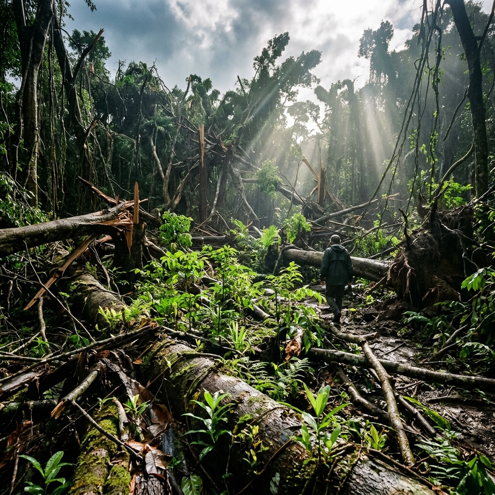

On the night of 1 February 2011, people in Far North Queensland had packed their things. They got in their cars. They drove far from the coast. The weather office had said the same thing for two days: Cyclone Yasi was going to be the biggest storm to hit Queensland in a very long time. The warnings worked and helped keep people safe. But the land was still there to take the full hit.
By the middle of the night, the outer parts of Yasi were tearing up the coast at Mission Beach. The towns of Innisfail, Cardwell, Tully, and Mission Beach were empty. Most people had gone. When the storm hit, the land was all alone in the dark.
At about midnight, the eye of Yasi crossed the coast between Mission Beach and Cardwell. It was a Category 5 storm. The air pressure in the middle was 929 hPa. That made it the strongest storm to hit Queensland since 1918. The winds were 285 km/h. The gusts of wind were more than 300 km/h. The winds smashed the coast. A big wave of 5 metres came onto the land. This big, old rainforest — one of the oldest in the world — got the worst part of the storm.
“We thought we understood these forests. They’re hundreds of millions of years old. But when we walked in after Yasi, it was like walking on another planet. The canopy was simply gone.
In easy words: We thought we knew this rainforest. It is very, very old. But when we walked in after Yasi, it looked like a whole new place. The top of the trees was gone.
A Storm That Broke Records
Yasi was not just a very strong storm. It was also a very, very big storm. At its strongest, the strong winds reached more than 650 km wide. That is wider than some whole countries. It was so big that both Cairns in the north and Townsville in the south got hit at the same time. It was bigger than all of the United Kingdom.

The Big Move to Safety
About 175,000 people left their homes near the coast. Just one person died in the big wave. This shows what can happen when warnings are clear and people listen to them. Later, people worked out that if no one had left, hundreds of people might have died. Lots of houses were very badly broken.
The Farms Were Broken
Just five years before, Cyclone Larry had broken all the banana farms in this area. Then Yasi came and hit the same place. About 75 out of every 100 bananas in Australia were broken again. The sugar cane farms in Tully and Innisfail were smashed flat. The total cost of the damage was $3.6 billion. That was more than two times the cost of Larry.